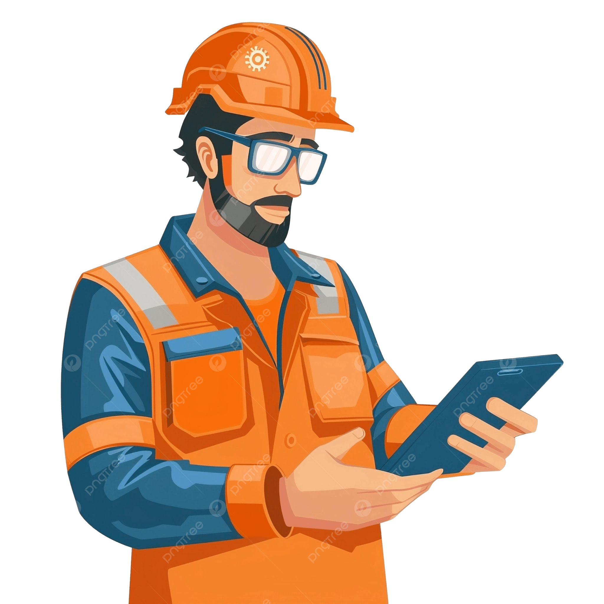

Pekerjaan Hari Ini0Total pekerjaan
Pekerjaan Kemarin0Total pekerjaan
Pembayaran Hari IniRp0Total penerimaan
Belum Lunas / DP0Nota tertunda
Jadwal Pekerjaan Besok
Persiapkan pekerjaan untuk hari berikutnya.
0 jadwal
Grafik Penerimaan
10 hari terakhir
Rp0+12%
10 Hari Terakhir
Trend Nota
0Total nota
6 Bulan Terakhir
Nota SelesaiNota Pending
Status Pembayaran
0Total Nota
Lunas0%0 nota
Belum Lunas / DP0%0 nota
Top Teknisi
Riwayat Nota Terbaru
Transaksi contoh terbaru.
Buat Nota Baru
Contoh form pembuatan nota digital.
Riwayat Nota
Semua invoice contoh yang tersimpan di browser demo.
Jadwal Pekerjaan
Atur tugas hari ini atau besok.
Pelanggan
Data pelanggan contoh.
Teknisi
Pilih salah satu akun untuk mencoba sisi teknisi.
Monitoring Teknisi
Pantau status teknisi dari pekerjaan hari ini.
Teknisi Aktif0
akun aktif
Dalam Perjalanan0
menuju lokasi
Dikerjakan0
sedang bekerja
Selesai Hari Ini0
selesai
Aktivitas Tim
Catatan aktivitas demo.
Pengaturan
Pada produk asli, branding toko dan informasi pembayaran dapat disimpan di sini.
Pengaturan Demo
Fitur pengaturan dikunci pada demo agar calon pelanggan tidak mengubah identitas produk.
Backup Data
Pada produk asli, admin dapat mencadangkan data.
Backup Database
Mode demo menggunakan localStorage browser, bukan database asli.
TEKNISI LAPANGAN
Halo, Teknisi! 👋
Semangat hari ini! Selesaikan setiap pekerjaan dengan terbaik.

Utamakan keselamatan kerjaGunakan APD dan periksa kondisi unit sebelum memulai pekerjaan.
HARI INI0
Pekerjaan
BERJALAN0
Dalam proses
SELESAI0
Hari ini
JADWAL BERIKUTNYA-
Belum ada jadwal
Pekerjaan Hari Ini 0
Pekerjaan Saya
Daftar pekerjaan yang ditugaskan kepada akun Anda.
TOTAL TUGAS0
Semua pekerjaan
DALAM PERJALANAN0
Menuju lokasi
DIKERJAKAN0
Sedang dikerjakan
SELESAI0
Hari ini
Pekerjaan Aktif Hari Ini 0
Riwayat Pekerjaan
Riwayat tugas yang sudah selesai.
T
Teknisi Demo
Teknisi AC Service ManagementEmail Login-
Akses Invoice BotDinonaktifkan pada demo
Status AkunAktif